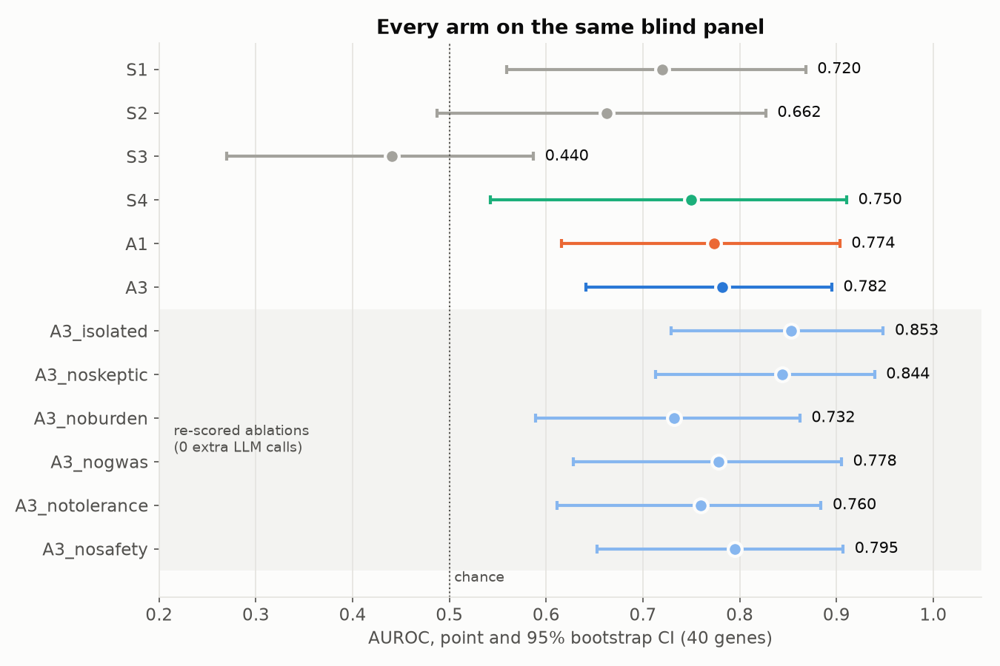
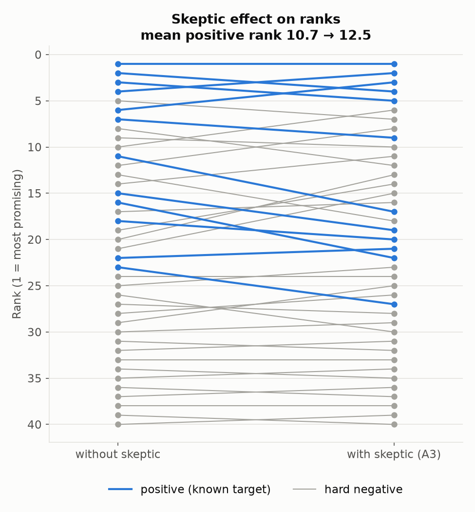

<title>Null Hypothesis</title>
<meta name="claude:viewport-fit-sides" content="cover">
<link rel="preconnect" href="https://fonts.googleapis.com">
<link rel="preconnect" href="https://fonts.gstatic.com" crossorigin>
<link rel="stylesheet" href="https://fonts.googleapis.com/css2?family=Archivo:wdth,wght@75..100,500..800&family=IBM+Plex+Sans:wght@400;500;600&family=IBM+Plex+Mono:wght@400;500&display=swap">
<style>
/* Layout: five full-screen slides that snap; each is a 16:9-proportioned sheet of lab paper
   with a monospace "accession" strip, like a sample record. Single light look, chosen so the
   light figures sit on the same paper. */
:root {
  color-scheme: light;
  --paper: #fbfbf9;
  --sheet: #ffffff;
  --ink: #14171b;
  --ink-2: #555b63;
  --rule: #e2e3df;
  --a3: #2a78d6;      /* collective, matches figures */
  --a1: #c4501f;      /* single agent (figure orange, darkened for text contrast) */
  --s4: #128a5f;      /* scripted baseline */
  --wash: #eef4fc;
  --display: "Archivo", "Arial Narrow", "Helvetica Neue", Arial, sans-serif;
  --body: "IBM Plex Sans", "Helvetica Neue", Arial, sans-serif;
  --mono: "IBM Plex Mono", ui-monospace, "SF Mono", Menlo, monospace;
}
* { box-sizing: border-box; }
html { scroll-snap-type: y mandatory; scroll-behavior: smooth; }
@media (prefers-reduced-motion: reduce) { html { scroll-behavior: auto; } }
body { background: var(--paper); color: var(--ink); font-family: var(--body); font-size: 16px; line-height: 1.5; }

.slide {
  scroll-snap-align: start;
  min-height: 100vh;
  display: grid;
  place-items: center;
  padding-block: 28px;
  padding-left: max(16px, env(safe-area-inset-left, 0px));
  padding-right: max(16px, env(safe-area-inset-right, 0px));
}
.sheet {
  width: min(1240px, 100%);
  background: var(--sheet);
  border: 1px solid var(--rule);
  border-radius: 6px;
  padding: clamp(20px, 3.2vw, 44px);
  display: grid;
  gap: clamp(14px, 2vw, 24px);
}
.strip {
  display: flex; flex-wrap: wrap; gap: 6px 18px; justify-content: space-between;
  font-family: var(--mono); font-size: 12px; color: var(--ink-2);
  border-bottom: 1px solid var(--rule); padding-bottom: 10px;
  letter-spacing: 0.02em;
}
.strip b { color: var(--ink); font-weight: 500; }
h1, h2 { font-family: var(--display); font-stretch: 82%; font-weight: 750; letter-spacing: -0.01em; text-wrap: balance; margin: 0; line-height: 1.05; }
h1 { font-size: clamp(34px, 5.2vw, 64px); }
h2 { font-size: clamp(26px, 3.4vw, 42px); }
.lede { font-size: clamp(16px, 1.45vw, 19px); color: var(--ink-2); max-width: 68ch; margin: 0; }
p { margin: 0; }
.eyebrow { font-family: var(--mono); font-size: 12px; text-transform: uppercase; letter-spacing: 0.12em; color: var(--a3); }

.cols { display: grid; grid-template-columns: 1fr 1fr; gap: clamp(16px, 2.4vw, 32px); align-items: start; }
.cols.wide-right { grid-template-columns: 0.9fr 1.1fr; }
.cols > * { min-width: 0; }
@media (max-width: 860px) { .cols, .cols.wide-right { grid-template-columns: 1fr; } }

figure { margin: 0; display: grid; gap: 6px; }
figure img { width: 100%; height: auto; border: 1px solid var(--rule); border-radius: 4px; background: #fcfcfb; }
figcaption { font-size: 13px; color: var(--ink-2); }

/* slide 1: the PCSK9 chain */
.chain { display: flex; flex-wrap: wrap; align-items: stretch; gap: 8px; }
.chain div { flex: 1 1 150px; border: 1px solid var(--rule); border-radius: 4px; padding: 12px 14px; display: grid; gap: 2px; }
.chain .k { font-family: var(--mono); font-size: 12px; color: var(--ink-2); }
.chain .v { font-weight: 600; }
.sources { display: grid; grid-template-columns: repeat(auto-fit, minmax(170px, 1fr)); gap: 8px; }
.sources div { background: var(--wash); border-radius: 4px; padding: 10px 12px; font-size: 14px; }
.sources b { display: block; font-family: var(--display); font-stretch: 85%; font-size: 17px; }

/* tables */
.tbl { overflow-x: auto; }
table { border-collapse: collapse; width: 100%; font-size: 14px; font-variant-numeric: tabular-nums; }
th, td { text-align: left; padding: 7px 10px; border-bottom: 1px solid var(--rule); vertical-align: top; }
th { font-family: var(--mono); font-size: 11px; text-transform: uppercase; letter-spacing: 0.08em; color: var(--ink-2); font-weight: 500; }
td.num, th.num { text-align: right; white-space: nowrap; }
tr.a3 td:first-child { color: var(--a3); font-weight: 600; }
tr.a1 td:first-child { color: var(--a1); font-weight: 600; }
tr.s4 td:first-child { color: var(--s4); font-weight: 600; }
tr.dim td { color: var(--ink-2); }
.agent { font-weight: 600; }
.cut { color: var(--ink-2); text-decoration: line-through; }

/* slide 3: the number */
.hero-num { display: grid; gap: 4px; padding: 18px 20px; border-left: 4px solid var(--a3); background: var(--wash); border-radius: 0 4px 4px 0; }
.hero-num .big { font-family: var(--display); font-stretch: 78%; font-weight: 800; font-size: clamp(52px, 8vw, 104px); line-height: 0.95; font-variant-numeric: tabular-nums; }
.hero-num .ci { font-family: var(--mono); font-size: clamp(14px, 1.3vw, 17px); }
.hero-num .lab { font-size: 14px; color: var(--ink-2); }

/* slide 4: rigor ledger */
.ledger { display: grid; gap: 0; border-top: 1px solid var(--rule); }
.ledger div { display: grid; grid-template-columns: 11ch 1fr; gap: 14px; padding: 9px 0; border-bottom: 1px solid var(--rule); font-size: 14.5px; }
.ledger code { font-family: var(--mono); font-size: 13.5px; color: var(--a3); font-weight: 500; }
.limits { margin: 0; padding-left: 18px; display: grid; gap: 6px; font-size: 14.5px; }
.limits li::marker { color: var(--ink-2); }
h3 { font-family: var(--display); font-stretch: 85%; font-size: 19px; margin: 0 0 8px; }

.callout { border: 1px solid var(--rule); border-radius: 4px; padding: 14px 16px; display: grid; gap: 6px; }
.callout strong { font-family: var(--display); font-stretch: 85%; font-size: 20px; }

/* navigation */
.nav {
  position: fixed; right: max(14px, env(safe-area-inset-right, 0px)); bottom: calc(14px + env(safe-area-inset-bottom, 0px));
  display: flex; gap: 6px; z-index: 5;
}
.nav button {
  font: 500 13px var(--mono); color: var(--ink); background: var(--sheet); border: 1px solid var(--rule);
  border-radius: 4px; padding: 7px 11px; cursor: pointer;
}
.nav button:hover { border-color: var(--a3); color: var(--a3); }
.nav button:focus-visible { outline: 2px solid var(--a3); outline-offset: 2px; }
.nav span { font: 13px var(--mono); color: var(--ink-2); align-self: center; padding: 0 4px; min-width: 4ch; text-align: center; }
</style>

<main id="deck">

<!-- 1 · PROBLEM -->
<section class="slide" id="problem" aria-label="Slide 1, problem">
  <div class="sheet">
    <div class="strip"><span><b>Null Hypothesis</b> · ScienceClaw, MIT Media Lab</span><span>Karuniya Premnath · Karishma Premnath · Dheepak Karan</span><span>1 / 6 · problem</span></div>
    <p class="eyebrow">Null Hypothesis · human knockouts as free clinical trials</p>
    <h1>Some people are born with a broken gene and are healthier for it. Finding the next one means reading evidence no single source holds.</h1>
    <div class="chain" aria-label="The PCSK9 story">
      <div><span class="k">genotype</span><span class="v">Loss-of-function in PCSK9</span></div>
      <div><span class="k">biomarker</span><span class="v">Lifelong low LDL cholesterol</span></div>
      <div><span class="k">hard endpoint</span><span class="v">Far fewer heart attacks</span></div>
      <div><span class="k">drug</span><span class="v">Evolocumab, approved 2015</span></div>
    </div>
    <p class="lede">To call a gene a target you need every link: carriers get less disease, a second study type agrees, people live fine without it, nothing breaks elsewhere. That evidence sits in separate places.</p>
    <div class="sources">
      <div><b>Rare-variant burden</b>Do carriers get less disease?</div>
      <div><b>GWAS</b>Does common variation agree?</div>
      <div><b>Constraint · DepMap</b>Can a human live without it?</div>
      <div><b>Other traits</b>Does breaking it cause harm elsewhere?</div>
    </div>
    <p class="lede"><strong style="color:var(--ink)">Question:</strong> does a collective of agents that each see one slice, coordinating with no planner, rank genes better than one agent that sees everything?</p>
  </div>
</section>

<!-- 2 · SYSTEM -->
<section class="slide" id="system" aria-label="Slide 2, system">
  <div class="sheet">
    <div class="strip"><span><b>System</b> · four specialists, one skeptic, a shared board</span><span>Gemini 3 Flash for every agent in every arm</span><span>2 / 6 · system</span></div>
    <h2>Each agent reads one directory of evidence. Nothing assigns work; agents pick up each other's needs from the board.</h2>
    <div class="cols wide-right">
      <div style="display:grid; gap:14px">
        <div class="tbl">
          <table>
            <thead><tr><th>Agent</th><th>Sees only</th><th>Answers</th></tr></thead>
            <tbody>
              <tr><td class="agent" style="color:var(--a3)">Burden</td><td>In-scope rare-variant rows</td><td>Do carriers get less disease?</td></tr>
              <tr><td class="agent" style="color:#c4501f">GWAS</td><td>In-scope credible sets</td><td>Does a second study type agree?</td></tr>
              <tr><td class="agent" style="color:var(--s4)">Tolerance</td><td>LOEUF, pLI, DepMap</td><td>Can a human live without it?</td></tr>
              <tr><td class="agent" style="color:#a87200">Safety</td><td>Out-of-scope traits</td><td>Does breaking it harm elsewhere?</td></tr>
              <tr><td class="agent" style="color:#b3416c">Skeptic</td><td>Only the other agents' verdicts</td><td>Is this evidence trustworthy?</td></tr>
              <tr class="dim"><td class="agent">Variant</td><td>Lead variant, scored by NVIDIA Evo 2</td><td>Added after the headline; see slide 6</td></tr>
            </tbody>
          </table>
        </div>
        <p style="font-size:14.5px; color:var(--ink-2)">Round 0: independent verdicts. Round 1: each agent bids on the open need it can answer, ranked by <span style="font-family:var(--mono); color:var(--ink)">pressure = 2·novelty + centrality + 0.5·depth + 0.2·age</span>. Round 2: skeptic challenges, then revisions. A pure-Python scorer turns the latest verdicts into one number per gene.</p>
      </div>
      <figure>
        
        <figcaption>Every artifact carries a UUID, content hash and parent links. Gene_01, chosen by structure only.</figcaption>
      </figure>
    </div>
  </div>
</section>

<!-- 3 · RESULT -->
<section class="slide" id="result" aria-label="Slide 3, result">
  <div class="sheet">
    <div class="strip"><span><b>Result</b> · 40-gene blind panel, 12 known targets, 28 hard negatives</span><span>2 seeds · 1,000 paired resamples</span><span>3 / 6 · result</span></div>
    <div class="cols">
      <div style="display:grid; gap:16px">
        <div class="hero-num">
          <span class="lab">Pre-registered headline · Δ AUROC, collective − single agent</span>
          <span class="big">+0.008</span>
          <span class="ci">95% CI −0.074 to +0.103</span>
        </div>
        <p class="lede">A tie. The collective is well above chance (permutation p = 0.003) and steadier across seeds, at about the same spend as one agent.</p>
        <div class="tbl">
          <table>
            <thead><tr><th>Arm</th><th class="num">AUROC (95% CI)</th><th class="num">Calls/gene</th><th class="num">$ / run</th></tr></thead>
            <tbody>
              <tr class="a3"><td>A3 collective</td><td class="num">0.782 (0.641–0.895)</td><td class="num">10</td><td class="num">1.32</td></tr>
              <tr class="a1"><td>A1 single agent</td><td class="num">0.774 (0.616–0.903)</td><td class="num">3</td><td class="num">1.09</td></tr>
              <tr class="s4"><td>S4 scripted, all features</td><td class="num">0.750 (0.542–0.910)</td><td class="num">0</td><td class="num">0</td></tr>
              <tr class="dim"><td>S1 tolerance alone</td><td class="num">0.720</td><td class="num">0</td><td class="num">0</td></tr>
            </tbody>
          </table>
        </div>
      </div>
      <figure>
        
        <figcaption>Same model, same per-gene call cap, same panel. Ablations re-score saved boards with no extra LLM calls.</figcaption>
      </figure>
    </div>
  </div>
</section>

<!-- 4 · RIGOR -->
<section class="slide" id="rigor" aria-label="Slide 4, rigor">
  <div class="sheet">
    <div class="strip"><span><b>Rigor</b> · what was fixed, and when</span><span>github.com/karunprem45/natures-knockouts</span><span>4 / 6 · rigor</span></div>
    <h2>Panel and metrics frozen at commit <span style="font-family:var(--mono); color:var(--a3)">12b8c58</span>, before any arm ran.</h2>
    <div class="cols">
      <div>
        <h3>Ledger</h3>
        <div class="ledger">
          <div><code>12b8c58</code><span><b>prereg</b> tag: 40-gene panel, metrics, scoring weights</span></div>
          <div><code>28a0e95</code><span><b>results-raw</b> tag: every arm's scores and boards, hashed, before any A1/A3 metric</span></div>
          <div><code>4729a6b</code><span><b>results-final</b> tag: arms table, figures, findings</span></div>
          <div><code>203 checks</code><span>No view holds another channel's data, a gene symbol, an Ensembl ID or drug data. A planted leak fails it.</span></div>
          <div><code>p = 0.003</code><span>A3 against 1,000 label shuffles</span></div>
          <div><code>2 / 800</code><span>A3 artifacts that still named a gene: redacted and flagged</span></div>
        </div>
      </div>
      <div>
        <h3>Limitations, stated by us</h3>
        <ul class="limits">
          <li>40 genes: every interval is wide, and S4, A1 and A3 overlap.</li>
          <li>Famous targets carry more evidence rows; any arm can partly score how well studied a gene is.</li>
          <li>Names, IDs and drug data are removed, but trait patterns remain.</li>
          <li>Open Targets labels "protective" from the sign of beta, so lower HDL reads as protective.</li>
          <li>Two amendments after the tag, both before any LLM arm: the model (Gemini 2.5 Flash was not served) and Mendelian diseases shown as categories.</li>
          <li>16 gene-runs lost to rate limits were rerun under one rule for every arm, logged.</li>
          <li>Top-ranked negatives are hypotheses, not targets.</li>
        </ul>
      </div>
    </div>
  </div>
</section>

<!-- 5 · DISCOVERY -->
<section class="slide" id="discovery" aria-label="Slide 5, discovery">
  <div class="sheet">
    <div class="strip"><span><b>What we learned</b> · and what the collective ranked highly</span><span>Ablations are secondary; the headline stays A3 vs A1</span><span>5 / 6 · discovery</span></div>
    <h2>Separate views helped. An over-eager skeptic gave the gain back.</h2>
    <div class="cols">
      <div style="display:grid; gap:14px">
        <div class="callout">
          <strong>0.853 → 0.782</strong>
          <p>Four specialists who never talk (round 0 only) scored 0.853, ahead of the single agent by +0.080 (−0.004 to +0.173). The full loop scored 0.782.</p>
        </div>
        <div class="callout">
          <strong>Why: challenges that fire on everything</strong>
          <p>The skeptic flagged burden evidence as biomarker-only on about 7 in 10 genes, known target or not. Halving the strongest channel everywhere pushed the 12 known targets from mean rank 10.7 to 12.5.</p>
        </div>
        <div class="tbl">
          <table>
            <thead><tr><th>A3 rank</th><th>Top-ranked negatives</th><th>Note</th></tr></thead>
            <tbody>
              <tr><td class="num">6</td><td><b>ACVR1C</b> (ALK7)</td><td>Protective LoF for fat distribution and type 2 diabetes</td></tr>
              <tr><td class="num">7</td><td>ZNF229</td><td>Weaker evidence</td></tr>
              <tr><td class="num">8</td><td>PKD1L3</td><td>Weaker evidence</td></tr>
            </tbody>
          </table>
        </div>
        <p style="font-size:14.5px; color:var(--ink-2)">Next: a skeptic whose challenges must cite a row, tested on a fresh panel.</p>
      </div>
      <figure>
        
        <figcaption>Each line is one gene. Blue: known targets. Grey: hard negatives.</figcaption>
      </figure>
    </div>
  </div>
</section>

<!-- 6 · EXTENSIONS -->
<section class="slide" id="extensions" aria-label="Slide 6, extensions">
  <div class="sheet">
    <div class="strip"><span><b>Extensions</b> · run after results-final, not pre-registered</span><span>Google Cloud · NVIDIA · OpenAI</span><span>6 / 6 · extensions</span></div>
    <h2>The isolated-specialist result holds on a second model, and a DNA language model joins the board.</h2>
    <div class="cols">
      <div style="display:grid; gap:14px">
        <div class="tbl">
          <table>
            <thead><tr><th>Run</th><th class="num">AUROC (95% CI)</th><th class="num">Paired Δ</th></tr></thead>
            <tbody>
              <tr class="a3"><td>Gemini · A3 round 0</td><td class="num">0.853 (0.729–0.948)</td><td class="num">+0.080 vs A1</td></tr>
              <tr class="a3"><td>GPT-5 mini · A3 round 0</td><td class="num">0.857 (0.730–0.961)</td><td class="num">+0.037 vs A1</td></tr>
              <tr class="dim"><td>GPT-5 mini · A1 / A3</td><td class="num">0.820 / 0.751</td><td class="num">−0.068 A3 vs A1</td></tr>
              <tr><td style="color:#a87200; font-weight:600">Gemini · A3 + Evo 2</td><td class="num">0.820 (0.671–0.929)</td><td class="num">+0.038 vs A3</td></tr>
            </tbody>
          </table>
        </div>
        <div class="callout">
          <strong>NVIDIA Evo 2 as the Variant agent</strong>
          <p>One Evo 2 40B pass over 2,048 bp around the lead variant scores every possible base change in the window; the agent reports where the real variant falls. Agents asked for it 77 times; Evo 2 answered 30, with no errors. Coordinates never reach a prompt.</p>
        </div>
        <div class="callout">
          <strong>What to take from it</strong>
          <p>On both models, specialists who never talk beat the full coordination loop. Evo 2 leans positive, but GWAS lead variants are mostly non-coding tags (median percentile 59), so it had little to score. Every interval here includes zero.</p>
        </div>
      </div>
      <figure>
        
        <figcaption>Same 40 genes, labels and paired bootstrap as the headline. GPT-5 mini rejects temperature 0, so it ran at its default.</figcaption>
      </figure>
    </div>
  </div>
</section>

</main>

<nav class="nav" aria-label="Slide navigation">
  <button type="button" id="prev" aria-label="Previous slide">←</button>
  <span id="pos" aria-live="polite">1/5</span>
  <button type="button" id="next" aria-label="Next slide">→</button>
</nav>

<script>
(() => {
  const slides = [...document.querySelectorAll(".slide")];
  const pos = document.getElementById("pos");
  let current = 0;
  const go = (i) => {
    current = Math.max(0, Math.min(slides.length - 1, i));
    slides[current].scrollIntoView({ block: "start" });
  };
  const io = new IntersectionObserver((entries) => {
    entries.forEach((e) => {
      if (e.isIntersecting) {
        current = slides.indexOf(e.target);
        pos.textContent = `${current + 1}/${slides.length}`;
      }
    });
  }, { threshold: 0.55 });
  slides.forEach((s) => io.observe(s));
  document.getElementById("prev").addEventListener("click", () => go(current - 1));
  document.getElementById("next").addEventListener("click", () => go(current + 1));
  document.addEventListener("keydown", (e) => {
    if (["ArrowRight", "ArrowDown", "PageDown", " "].includes(e.key)) { e.preventDefault(); go(current + 1); }
    if (["ArrowLeft", "ArrowUp", "PageUp"].includes(e.key)) { e.preventDefault(); go(current - 1); }
    if (e.key === "Home") { e.preventDefault(); go(0); }
    if (e.key === "End") { e.preventDefault(); go(slides.length - 1); }
  });
  const ids = slides.map((s) => s.id);
  if (location.hash && ids.includes(location.hash.slice(1))) go(ids.indexOf(location.hash.slice(1)));
})();
</script>
